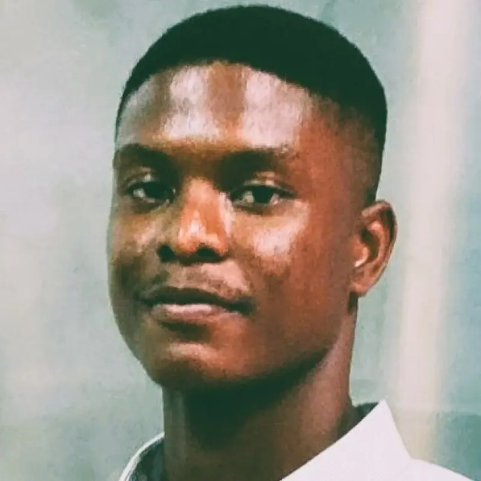
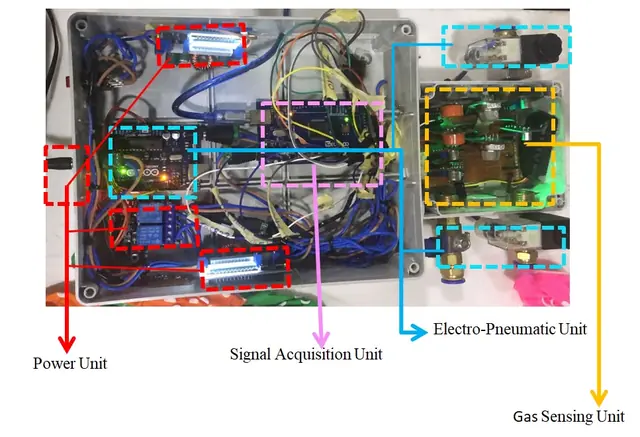
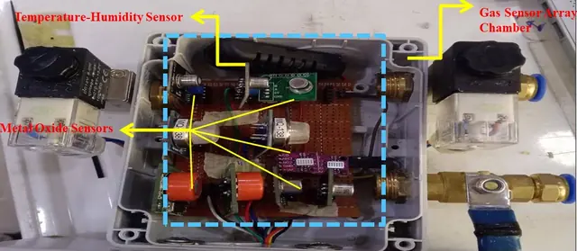
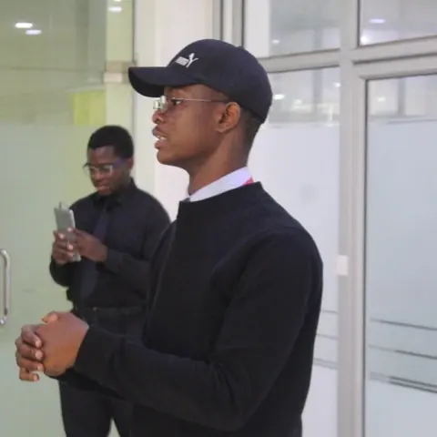
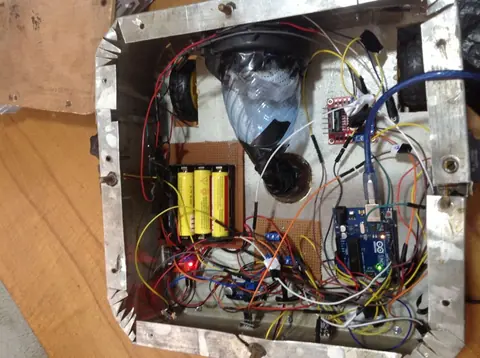
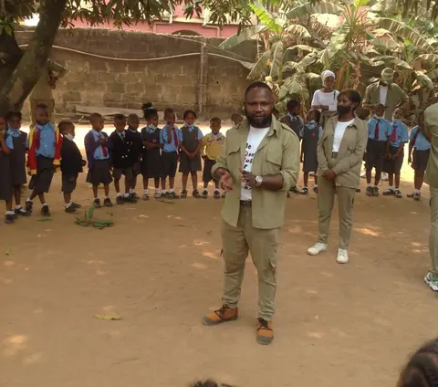

Mechanical engineer, researcher and builder. I want machines that learn to control themselves, and I want to teach people how to build them.
I hold a B.Eng. in Mechanical Engineering from Covenant University (First Class, 2016–2021). I started as a data scientist and research assistant at TEERG, where I co-authored publications on energy systems, then moved into building: simulation software for buildings, IoT hardware, and a racing car with students.
My research interest is learning-based control of dynamic systems with formal guarantees. Over the next five years I want to apply AI and ML control to agriculture and construction, and I plan to teach in some form whatever job title I hold.

A breath-sensing system and the software that reads it.
A gas-sensing system with an array of metal-oxide sensors, a temperature-humidity sensor and an electro-pneumatic unit that moves breath samples through the sensor chamber. I wrote the predictive software that recognises VOC biomarker patterns, tested on data from more than 20 patients.


An MEP engineering bureau with an escrow job board and an ERP.
A coordinated MEP engineering bureau and marketplace: HVAC, electrical, plumbing and fire design packages, site inspections and resident engineers, plus an escrow job board where each milestone is funded before work starts and released when the client approves it. Behind it sits an ERP that tracks jobs, milestones and drawings.
I coordinated delivery of the escrow e-invoicing and AI-based bill and contract administration microservices, using Rust crates for up to 10x performance gains. We shipped and tested more than 10 modules, including a geometric CAD/BIM model viewer and an energy simulation.
312 packages issued · 64 vetted engineers · 48h median first response (as shown on mevire.org)
Body-worn camera prototypes, from PCB to stress test.
I developed prototypes of body-worn cameras, covering mechanical and PCB design, and verified ESD compliance. I coordinated electronic system verification and thermal and mechanical stress tests.
A student team building a 400cc Formula Student vehicle.
A Covenant University student team that designs, fabricates and tunes a 400cc Formula Student vehicle. I mentor the team and own the electronics. I also pitched the vehicle at an innovation competition (recording on YouTube).
Research is the part of my work that gets a citation. The part that gets me out of bed is making it easier for the next engineering student in Nigeria to build something real. I mentor students on a racing car now, and I plan to run build challenges in the style of Hebron MotorSports for engineering students across the country, next to a standing teaching role.



Learning-based control, stability guarantees, and machine learning for energy systems.
Embedded systems, IoT and electronics, from schematic to a working prototype.
Engineering competitions, build challenges and first-time project teams.